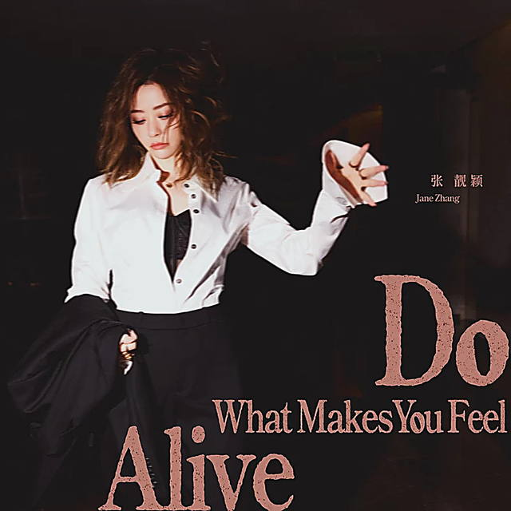

英文迷你专辑
生日当天首发首单的英文EP，陆续收录《Do What Makes You Feel Alive》《Down With You》《Some Days》《Lovesick》《Credits》5首曲目。首单由 Sarah Close 与 Ellis 创作、丁少华担任制作人及编曲，歌词以「去城市跳舞」等意象传递挣脱生活压力、跟随内心感受生活的态度。
✦ 腾讯音乐浪潮榜2025年10月榜第7位；2026.10 推出 CD / 黑胶实体版